Courses › Human Anatomy › Module 2
Human Anatomy · 6111
Module 2 — Pelvic Region
Topics: 2.1 Pelvic Bones • 2.2 Pelvic & Hip Joints • 2.3 Cauda Equina & Lumbar Plexus • 2.4 Sacral Plexus • 2.5 Pelvic Floor
📖 How to Use These Notes
- Best used with the lecture playing — keep these open, follow along, and add your own notes as you watch
- Lecture banners mark the start of each topic and run in the same order as the videos
- 🎙 Callouts = direct insights from the instructor's transcript
- ★ Tips = exam-relevant content or things the instructor told you to prepare
- Figures are taken directly from the module's slide decks
- Each topic ends with its own Quick-Reference Glossary
- Written from last year's recordings — if a lecture has been re-recorded or resequenced, Canvas wins
- Watch this module's lecture videos in your own Canvas module — video links are cohort-specific
- KenHub bony-pelvis atlas, videos, and quizzes are the assigned companion resources
TOPIC 2.1
Pelvic Bones
1. The Pelvis as a Force-Transfer Ring
- The pelvis links the lumbar spine to the lower limbs; load travels from the spine around the pelvic ring into the legs and back up. Inefficient force transfer through this ring produces symptoms (Neumann; returns in MSK).
| Male pelvis | Female pelvis |
|---|---|
| Subpubic angle < ~70° | Subpubic angle > ~80–90° |
| Thicker, heavier bone — stronger force generation/transmission | Thinner, lighter bone |
| Narrower inlet and outlet | Wider pelvic inlet and outlet to accommodate childbirth |
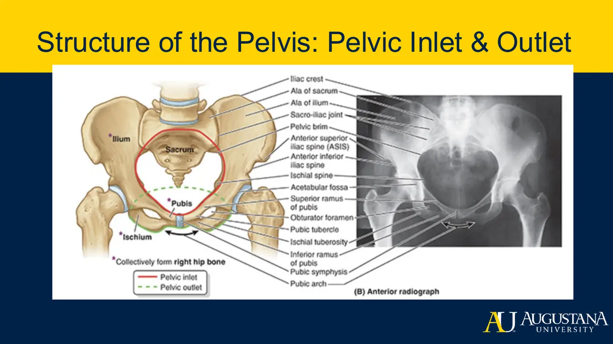
2. The Hip Bone (Os Coxae): Ilium · Ischium · Pubis
| Landmark | What to know |
|---|---|
| Iliac crest | Separates abdominal from pelvic cavity; abdominals, QL, erector spinae attach; palpation level ≈ L4; runs ASIS → PSIS |
| Iliac fossa | Anteromedial 'ditch' filled by the iliacus origin; bounded by crest above, arcuate line below |
| Gluteal surface | Posterior gluteal line divides glute max/med origins; inferior gluteal line divides glute med/min |
| ASIS | Sartorius, TFL, inguinal ligament; landmark for femoral triangle, appendicitis, true limb length |
| AIIS | Rectus femoris origin + proximal iliofemoral ligament |
| PSIS / PIIS | PSIS palpated for SI movement tests (stork stand); PIIS tops the greater sciatic notch |
| Iliac tuberosity / auricular surface | SI-ligament attachment / ear-shaped articulation → SI joint |
| Ischial tuberosity | The 'sit bones' — seated weight bearing; hamstrings, hamstring part of adductor magnus, sacrotuberous ligament |
| Ischial spine | Sacrospinous ligament; narrowest point of the birth canal |
| Pubic crest / tubercle | Rectus abdominis & pyramidalis / second inguinal-ligament anchor + symphysis palpation point |
| Pectineal line | Continues to the arcuate line → sacral promontory = the pelvic inlet ring; pectineus attaches |
| Rami | Superior ramus → acetabulum; inferior ramus + ischial ramus = ischiopubic ramus, framing the obturator foramen |
3. Acetabulum, Sacrum, Coccyx
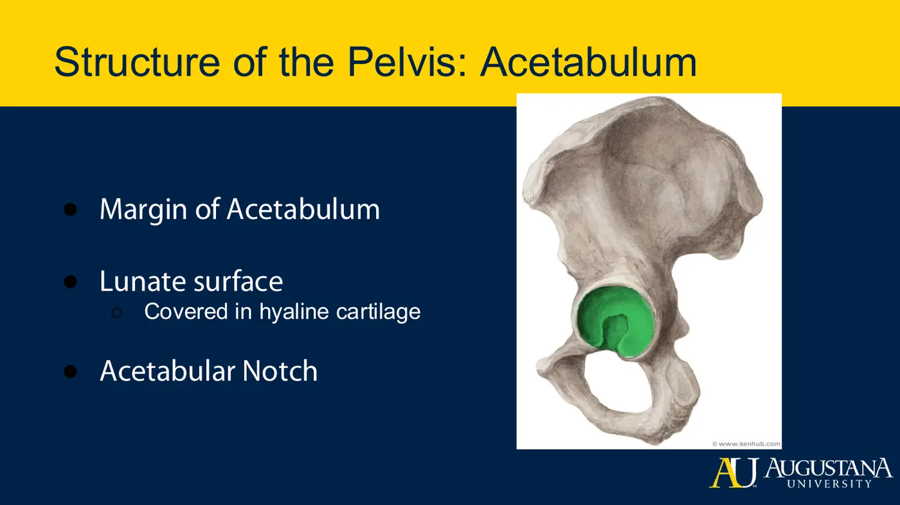
- Acetabulum — ilium + ischium + pubis converge; faces anteroinferiorly. C-shaped margin; hyaline-covered lunate surface bears weight; the acetabular notch leaves soft tissue instead of bone-on-bone contact inferiorly.
- Sacrum — base articulates with L5; sacral promontory marks the inlet; ala = wings; female sacrum shorter/wider and set more posteriorly (roomier cavity). Apex → coccyx. The canal carries the cauda equina and filum terminale, exiting at the sacral hiatus; median sacral crest posteriorly.
- Coccyx — 3–5 fused segments; slight motion (matters for the pelvic floor, Topic 2.5).
⚕ Clinical Spotlight — Pelvic Fractures
- High-velocity injuries: vehicle collisions, parachuting, bull riding.
- The pelvic ring breaks like a pretzel — expect multiple fracture sites, not one clean break: bilateral anterior compression → double breaks of the pubic rami; vertical limb loading can drive the femoral head through the acetabulum.
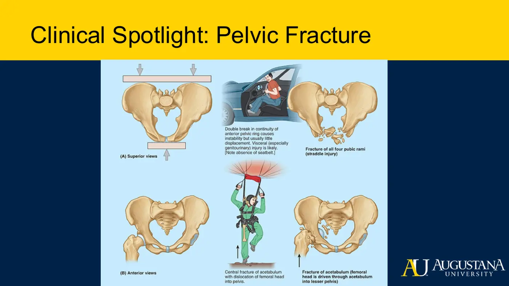
Topic 2.1 — Quick-Reference Glossary
| Term | Definition |
|---|---|
| Os coxae | Hip bone: fused ilium + ischium + pubis |
| Pelvic inlet / outlet | Superior / inferior openings; both wider in the female pelvis |
| Subpubic angle | <70° male vs >80–90° female |
| Ala | 'Wings' — of the ilium and of the sacrum |
| Arcuate line | Inferior border of iliac fossa; part of the inlet ring with the pectineal line |
| ASIS / AIIS / PSIS / PIIS | The four iliac spines and their attachments/landmarks |
| Lunate surface | Moon-shaped weight-bearing cartilage inside the acetabulum |
| Acetabular notch | Inferior gap in the margin, bridged by the transverse acetabular ligament |
| Sacral promontory / hiatus | Inlet landmark / inferior canal opening (S5, coccygeal n., filum exit) |
TOPIC 2.2
Pelvic and Hip Joints, Ligaments
1. The Joints
| Joint | Type / structure | Motion |
|---|---|---|
| Lumbosacral | L5–S1 disc + zygapophysial facets (coronal-plane orientation) | Flexion/extension, side bending; rotation limited by facet abutment |
| Sacroiliac | Auricular surfaces of sacrum & ilium | Gliding + slight rotation; little movement in most people |
| Sacrococcygeal | Sacral apex × coccygeal base | Coccyx flexion/extension — with sacral motion AND pelvic-floor contraction |
| Pubic symphysis | Secondary cartilaginous | Cushions ring load; separates in childbirth |
| Femoroacetabular | Ball-and-socket, multiaxial | All planes — the hip |
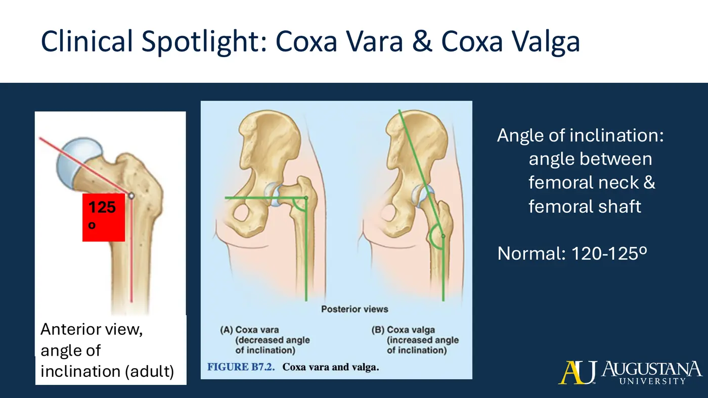
| Coxa vara (<120–125°) | Coxa valga (>120–125°) |
|---|---|
| Altered weight-bearing distribution | Shallower socket development |
| Early osteoarthritis risk | Increased dislocation risk |
- Femoral version (neck vs condylar axis, transverse view): normal 8–15°. Excess anteversion → in-toeing; retroversion → out-toeing. Both angle findings preview MSK-1.
2. Posterior Pelvic Ligaments
| Ligament | Runs | Restrains / notes |
|---|---|---|
| Iliolumbar | L4/L5 transverse processes → ilium | Fiber-direction-specific: extension, flexion, or contralateral side bending |
| Lateral lumbosacral | Lumbar TP → sacrum, beside the joint | Stabilizes the lumbosacral joint |
| Anterior SI | Sacrum → ilium, front of joint | Broad, flat stabilizer |
| Interosseous SI | Sacrum → iliac tuberosity (deepest) | Sits against the auricular surface |
| Posterior SI (short + long) | Sacral tubercles 1–2 → superior / PSIS → lower tubercles | Stronger and thicker than anterior; SI special tests in MSK-1 |
| Sacrotuberous | 3 origins (PSIS–PIIS, lateral sacrum, lateral coccyx) → ischial tuberosity | Key to trunk↔LE force transfer; blends with glute max and biceps femoris |
| Sacrospinous | Lower sacrum/coccyx → ischial spine | Deep to sacrotuberous; stabilizes SI; blends with coccygeus → pelvic-floor implications |
3. Three Passageways the Ligaments Create
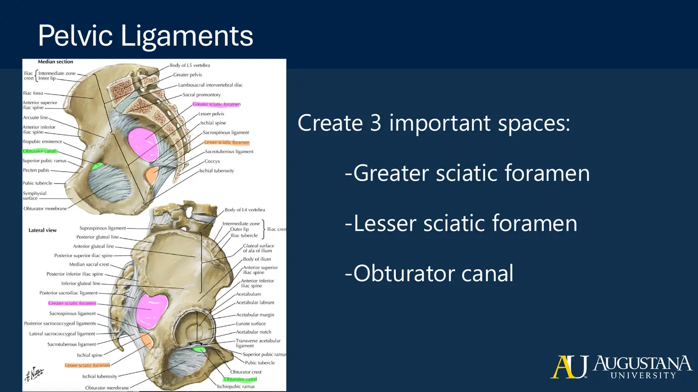
| Space | Bounded by | Traffic |
|---|---|---|
| Greater sciatic foramen | Ilium; sacrospinous lig./ischial spine; sacrotuberous lig. | Piriformis; superior & inferior gluteal n./vessels; sciatic n.; posterior femoral cutaneous n.; pudendal n. exits; nn. to obturator internus & quadratus femoris |
| Lesser sciatic foramen | Same two ligaments + ischial body | Obturator internus tendon; its nerve; internal pudendal vessels; pudendal n. re-enters — classic compression site |
| Obturator canal | Obturator membrane + superior pubic ramus | Obturator n., a., v. → the adductors |
4. Sacrococcygeal, Anterior Pelvic, and Hip Ligaments
- Sacrococcygeal set: anterior (checks coccyx extension), lateral (checks lateral translation), superficial + deep posterior (check flexion).
- Inguinal ligament — ASIS → pubic tubercle: the doorway for femoral nerve/artery/vein into the anterior thigh. Pubic symphysis ligaments — posterior, superior, inferior, anterior, each resisting separation in its own direction.
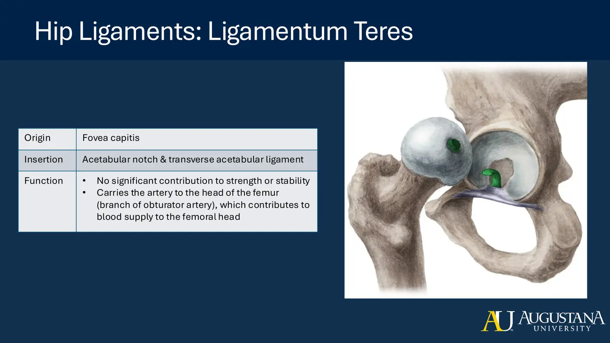
- Acetabular labrum — fibrocartilage rim; deepens the socket, suction-seal stability, keeps synovial fluid in. Transverse acetabular ligament bridges the notch. Ligamentum teres — fovea capitis → notch; mechanically minor but carries the artery to the femoral head (obturator branch) — the avascular-necrosis vessel.
- Capsule — longitudinal fibers + the circular zona orbicularis; synovium lubricates and nourishes.
| Capsular ligament | Position | Primary check |
|---|---|---|
| Iliofemoral (Y) | Anterior | Extension — what you hang on when 'resting on your ligaments' |
| Ischiofemoral | Posterior | Flexion/adduction per lecture orientation (see extraction flag) |
| Pubofemoral | Inferoanterior | Abduction |
Topic 2.2 — Quick-Reference Glossary
| Term | Definition |
|---|---|
| Angle of inclination | Femoral neck–shaft angle, normal ~120–125°; vara < , valga > |
| Femoral anteversion | Neck vs condyles, normal 8–15°; excess = in-toeing |
| Sacrotuberous / sacrospinous | The two ligaments converting sciatic notches into foramina |
| Greater / lesser sciatic foramen | Exit superior-and-inferior to piriformis / obturator internus + pudendal re-entry |
| Obturator canal | Obturator nerve-artery-vein passage to the adductors |
| Labrum | Socket-deepening fibrocartilage rim with suction seal |
| Ligamentum teres | Fovea capitis tether carrying the femoral-head artery |
| Zona orbicularis | Circular capsule fibers ringing the femoral neck |
| Y ligament (iliofemoral) | Strongest anterior check on hip extension |
TOPIC 2.3
Cauda Equina and the Lumbar Plexus
1. Cauda Equina
- Why the cord is shorter than the column: the cord stops growing ~age 4; vertebrae grow to ~14–18. Cord → conus medullaris ~L1–L2; below it, only roots — the cauda equina.
- Dural (thecal) sac continues to about S2; the filum terminale and the S5 + coccygeal nerves exit the sacral hiatus, the filum anchoring on coccygeal vertebra 1. On MRI: dark CSF in the lumbar cistern, light strands = the roots.
⚕ Clinical Spotlight — Laminectomy
- Lamina + spinous process removed to decompress the canal or exiting nerves (e.g., herniation).
- Hands-on implication: post-laminectomy there is no spinous process to palpate and no posterior bony shield — do not press into that space.
2. Lumbar Plexus (L1–L4, plus T12 and L5 contributions)
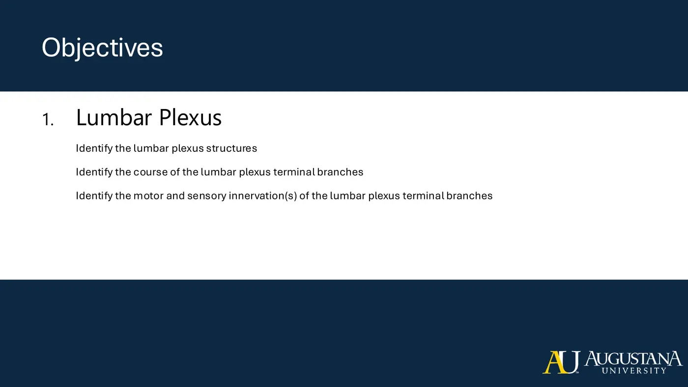
- Supplies the abdominal wall and anterolateral pelvis/thigh. Six terminal branches, superior → inferior: iliohypogastric, ilioinguinal, genitofemoral, lateral femoral cutaneous, femoral, obturator. T12 → subcostal nerve; L4+L5 → lumbosacral trunk into the sacral plexus.
| Nerve | Roots | Know it by |
|---|---|---|
| Subcostal | T12 | Below the 12th rib; abdominal wall + skin above iliac crest |
| Iliohypogastric | L1 | Abdominals; skin over crest, upper inguinal, hypogastric region |
| Ilioinguinal | L1 | Through the inguinal canal; lower abdominals, proximal medial thigh, genital skin — one of THREE genital-numbness differentials (with genitofemoral and pudendal) |
| Genitofemoral | L1–L2 | Pierces psoas; genital branch = cremaster (males) + genital skin; femoral branch = proximal thigh skin |
| Lateral femoral cutaneous | L2–L3 | Sensory only, lateral thigh; belt compression → meralgia paresthetica (numbness, no motor loss) |
| Femoral | L2–L4 post. div. | Anterior thigh compartment — knee extension, hip flexion; ends as the saphenous n. (medial knee/leg skin) |
| Obturator | L2–L4 ant. div. | Through the obturator canal; adductors + medial thigh skin |
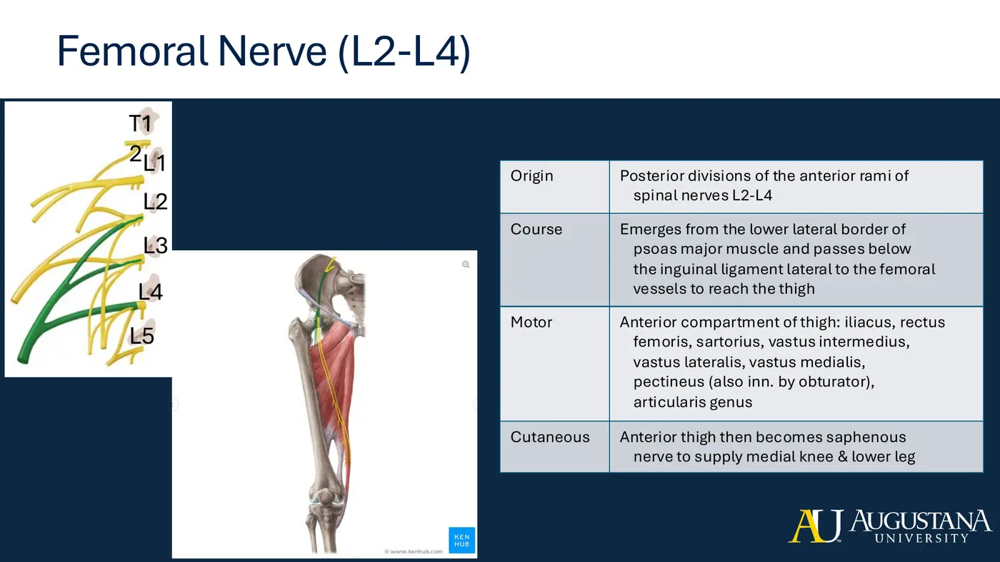
Topic 2.3 — Quick-Reference Glossary
| Term | Definition |
|---|---|
| Conus medullaris / cauda equina | Cord's end ~L1–L2 / the root bundle below it |
| Dural (thecal) sac | CSF-filled sleeve ending ~S2; lumbar cistern within |
| Filum terminale | Pial anchor from conus through the hiatus to coccyx 1 |
| Laminectomy | Lamina + spinous process removal for decompression |
| Lumbosacral trunk | L4–L5 bridge from lumbar to sacral plexus |
| Meralgia paresthetica | Lateral femoral cutaneous compression — sensory-only lateral thigh symptoms |
| Saphenous nerve | Femoral nerve's cutaneous continuation to the medial knee/leg |
TOPIC 2.4
Sacral Plexus
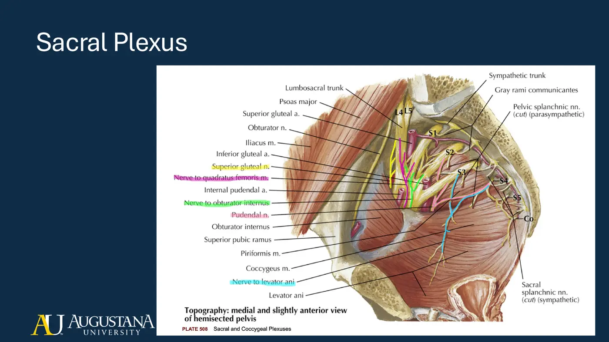
- Lumbosacral trunk (L4–L5) + anterior rami S1–S4 → the entire posterior hip/thigh and the whole lower leg, ankle, and foot.
| Branch | Roots | Innervation / course |
|---|---|---|
| Superior gluteal | L4–S1 (post.) | Glute med + min + TFL — 'superior = greater motor share'; above piriformis |
| N. to quadratus femoris | L4–S1 (ant.) | Quadratus femoris + inferior gemellus |
| Inferior gluteal | L5–S2 (post.) | Gluteus maximus only |
| N. to obturator internus | L5–S2 (ant.) | Obturator internus + superior gemellus; re-enters via the lesser sciatic foramen |
| N. to piriformis | S1–S2 (post.) | Piriformis, full stop |
| Sciatic | L4–S3 | Largest branch; below piriformis, lateral to the ischial tuberosity → posterior thigh; ends as tibial + common fibular |
| Posterior femoral cutaneous | S1–S3 | Sensory: posterior thigh, inferior gluteal, popliteal skin |
| Perforating cutaneous | S2–S3 | Pierces the sacrotuberous ligament; inferomedial gluteal skin |
| Pudendal | S2–S4 (ant.) | Exits greater → re-enters lesser sciatic foramen → Alcock's canal; perineal muscles, external anal sphincter, pubococcygeus; genital sensation |
| N. to coccygeus & levator ani | S3–S4 (ant.) | Runs on the muscles it supplies |
Pudendal Nerve — Localizing Compression
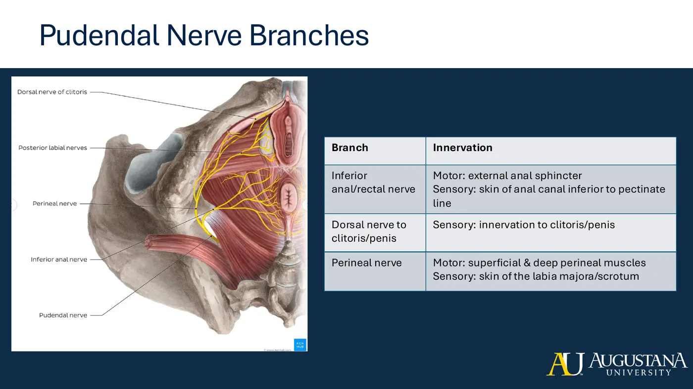
- Compression sites: outside the bony protection (bike-seat territory — the most common) and within Alcock's canal. Branch anatomy localizes the lesion: inferior rectal (anal sphincter + anal skin) branches BEFORE the canal — so anterior symptoms without anal involvement point past the inferior rectal branch, into the canal, affecting the perineal nerve and dorsal nerve of the clitoris/penis.
- Module assignment: trace every terminal branch from subcostal (T12) to the nerve to levator ani (S3–S4) — origin, course, termination. The Netter lumbosacral-plexus plate is the organizer.
Topic 2.4 — Quick-Reference Glossary
| Term | Definition |
|---|---|
| Lumbosacral trunk | L4–L5 contribution feeding the sacral plexus |
| Above vs below piriformis | Superior gluteal alone above; all else below |
| Sciatic nerve | L4–S3; tibial + common fibular terminal branches |
| Gemellus pairing | Superior gemellus ← n. to obturator internus; inferior gemellus ← n. to quadratus femoris |
| Pudendal nerve | S2–S4; greater-out, lesser-in, Alcock's canal; continence + genital sensation |
| Alcock's (pudendal) canal | Fascial tunnel on obturator internus — compression site |
| Inferior rectal nerve | First pudendal branch — anal sphincter and skin; spared in distal lesions |
TOPIC 2.5
Pelvic Floor Musculature & Pelvic Function
1. Layers, Deep → Superficial
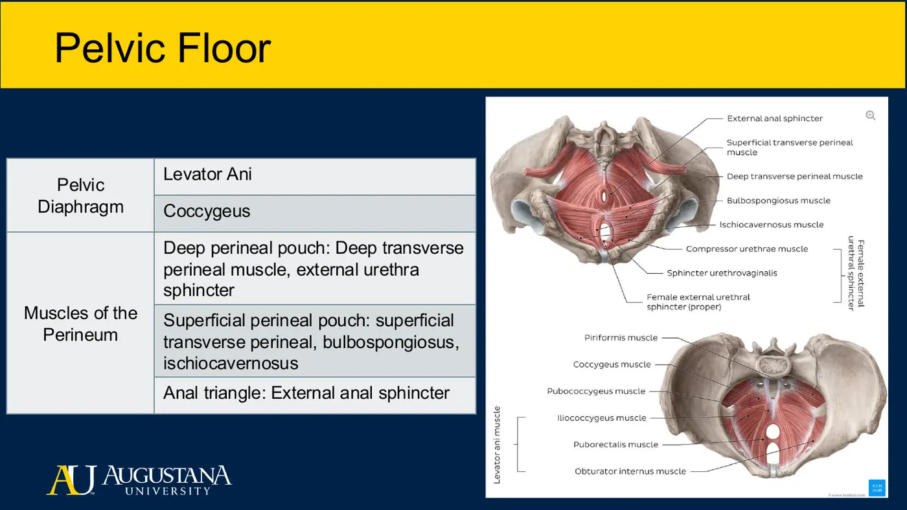
- 1 Pelvic diaphragm (levator ani + coccygeus) → 2 deep perineal pouch (deep transverse perineal + urethral sphincters) → 3 superficial perineal pouch (superficial transverse perineal, bulbospongiosus, ischiocavernosus) → 4 external anal sphincter.
2. Levator Ani (all three via the levator ani nerve)
- Puborectalis — pubis → loops the rectum → pubis. Contraction kinks the anorectal angle ('kink in the hose') = fecal continence; eccentric lengthening straightens it for defecation.
- Pubococcygeus — pubis → coccyx. Iliococcygeus — tendinous arch/ischial spine → coccyx.
- Shared job: support the pelvic organs and maintain urinary + fecal continence. Under raised intra-abdominal pressure (sneeze, cough, lifting), the contracting floor lifts under the bladder so the sphincters aren't overloaded — the mechanism behind stress incontinence when weak.
3. Coccygeus and the Supporting Walls
- Coccygeus (ischiococcygeus) — ischial spine → lower sacrum/coccyx; bilateral contraction flexes the coccyx (the 'tail-wagging' muscle); supports viscera.
- Piriformis (posterosuperior wall; anterior sacrum → greater trochanter; ER + abduction; anterior rami S1–S2) and obturator internus (anterolateral wall; → greater trochanter; ER). Floor dysfunction shifts load onto them → hip pain, sciatic-mimicking symptoms — and vice versa. Clear the pelvic floor in hip pain, and the hip in floor symptoms.
4. The Perineum
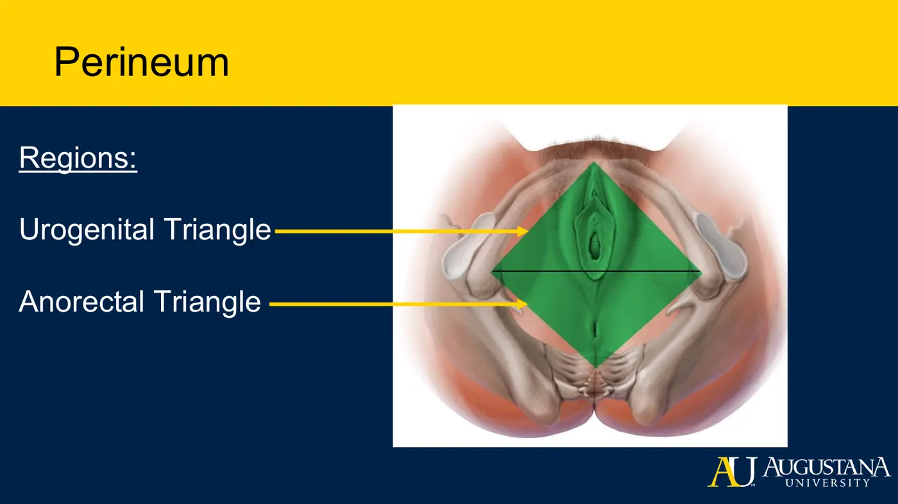
- Diamond: coccyx tip → ischial tuberosities → pubic symphysis. Urogenital triangle (urethral sphincter + vagina in females; penis in males) and anal triangle. Same muscles both sexes; females have the additional vaginal opening with slightly different fiber orientation.
5. Function of the Pelvis (from the slides)
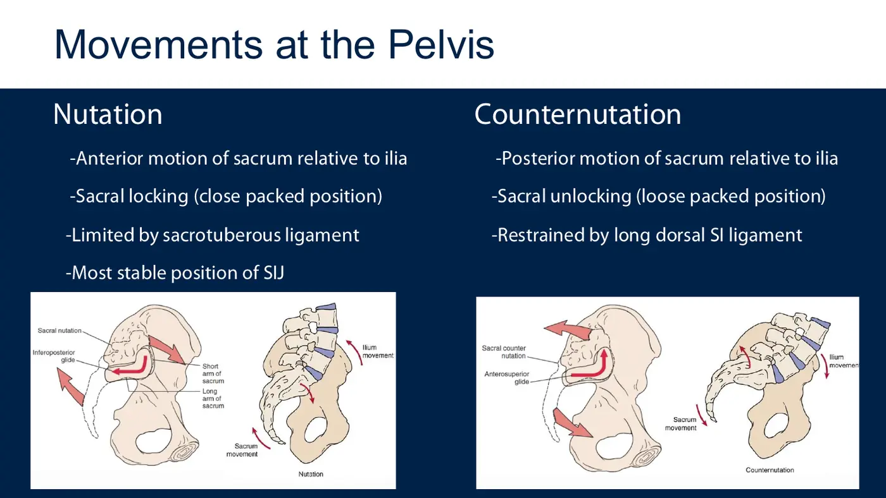
| Nutation | Counternutation |
|---|---|
| Sacrum moves anteriorly on the ilia | Sacrum moves posteriorly |
| Sacral locking — close-packed, the most stable SIJ position | Unlocking — loose-packed |
| Limited by the sacrotuberous ligament | Restrained by the long dorsal SI ligament |
- Five stabilization systems: deep longitudinal (erector spinae, deep thoracolumbar fascia, sacrotuberous lig., biceps femoris) • inner unit (multifidus, transversus abdominis, pelvic floor) • posterior oblique (lat dorsi, glute max, TL fascia) • anterior oblique (obliques, contralateral adductors, anterior fascia) • lateral (glute med/min, contralateral adductors).
6. Blood Supply and Lymph
- Aorta → common iliacs → internal iliac (the pelvic perfuser) → anterior + posterior divisions; key branches inferior gluteal, obturator, internal pudendal. Inguinal/pelvic lymph node clusters drain the lower limbs — recognize a swollen node on palpation and refer when unexpected.
Topic 2.5 — Quick-Reference Glossary
| Term | Definition |
|---|---|
| Pelvic diaphragm | Levator ani + coccygeus — the deep layer |
| Levator ani | Puborectalis + pubococcygeus + iliococcygeus |
| Anorectal angle | Puborectalis 'kink in the hose' — fecal continence mechanism |
| Coccygeus (ischiococcygeus) | Ischial spine → coccyx; bilateral = coccyx flexion |
| Perineum | Coccyx–ischial tuberosities–pubis diamond; urogenital + anal triangles |
| Bulbospongiosus / ischiocavernosus | Superficial-pouch sexual-function muscles |
| Nutation / counternutation | Anterior / posterior sacral motion; locking vs unlocking the SIJ |
| Internal iliac artery | Main pelvic supply; inferior gluteal, obturator, internal pudendal branches |
MODULE 2
Sync Session 2
- Breakout objectives: identify pelvic ligaments, muscles, bony landmarks; explain joint anatomy and movement; identify every lumbar and sacral plexus structure and where each peripheral nerve emerges; relate structures across regions, compartments, fascial layers, vessels; explain the anatomical basis of clinical disorders.